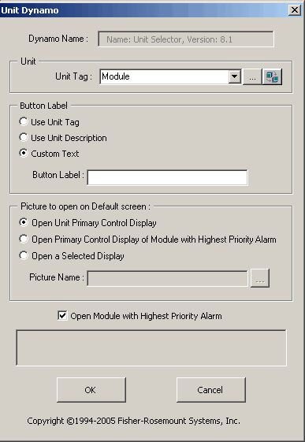

Building the Operator Keyboard display
After you have configured units and modules and created Primary Control Displays, you are ready to build the Operator Keyboard display. This is the only picture intended to open on the Operator Keyboard screen. Only one copy of the Operator Keyboard picture can be open at one time. The Operator Keyboard displays alarm indicators (Alarm buttons) and other buttons that launch a display or any picture that you wish on a specified monitor. The Operator Keyboard picture can be created from any main template.
Be sure to specify that the Operator Keyboard display opens on the screen defined as the Operator Keyboard screen in the Operator Keyboard Layout file. For example, suppose that you named your Operator Keyboard display MAINOK and you defined USER1 as the Operator Keyboard screen in the Layout file ([OperatingScreen] section). Include MAINOK in the picture definition for USER1.
Follow this procedure to create the Operator Keyboard display.
Open DeltaV Operate in Configure mode ().
Tip: If DeltaV Operate opens in Run mode, click Ctrl/W to switch to configure mode. Click if you want to change DeltaV Operate's startup mode.Select a main template from the Pic/Templates directory in the system tree view of the DeltaV Operate window.
Read the information on the template and name and save the picture.
Now you can add Unit Alarm buttons, Open Picture buttons, Replace Picture buttons, and any other pictures required for your process. When a faceplate opens, another faceplate with touch controls opens immediately to the left of it. The touch faceplate closes after 30 seconds of inactivity. Consider leaving this space on the picture blank and do not place any UnitAlarm dynamos in this space.
About Unit Alarm Buttons
Unit Alarm buttons provide the operator access to alarms on a unit-by-unit basis. Unit Alarm buttons are derived from the frsOperatorKeyBoardControls dynamo set. Because the Unit Alarm button dynamo requires a small amount of screen space, you can build an Operator Keyboard screen to show the alarm status of an entire plant if you wish. When a module in a unit goes into alarm, the Unit Alarm button flashes alerting the operator. The next section explains the configuration options for the Unit Alarm button.
The Default Monitor is defined in the UserSettings file and can also be set from the context menu in DeltaV Operate. Right click from a picture in DeltaV Operate to open the context menu. The Default Monitor defaults to Monitor 2 if not defined in the UserSettings file. Refer to The User_Ref and UserSettings Pictures topic for information on using the UserSettings file.
Adding Alarm Buttons to the Operator Keyboard Display
Open the Operator Keyboard picture in DeltaV Operate in Configure mode.
Open the frsOperatorKeyBoardControls dynamo set.
Drag and drop a Unit Alarm dynamo onto the picture. The Unit Dynamo dialog box opens:

If you know the unit name, type it in the unit name field. Otherwise, click the Browse button in the Unit Module Name field to open the Expression Builder dialog and browse to the unit that you want to assign to this button.
Use the options in the Button Label section to create the text that appears on the button. A maximum of twelve characters is allowed for the button label.
In the Picture to open on Default screen section select:
Open Unit Primary Control Display to open the Primary control display configured for the unit in the DeltaV Explorer on this screen.
Open Unit Primary Control Display of Module with Highest Priority Alarm to open the Primary control display configured in the DeltaV Explorer for the module that currently has the highest priority alarm.
Open a Selected Display to browse for the display that you wish to open on this screen.
Adding Other Buttons to the Operator Keyboard Display
Like the Unit Alarm button, Open and Replace Picture buttons and Open Faceplate buttons are derived from the frsOperatorKeyBoardControls dynamo set and from standard DeltaV Operate Experts that are documented in the online help and in Books Online. The only difference between standard use and Operator Keyboard use are the selections for the choice of monitor on which you want the object to open. These buttons can only be configured to use non-Operating Screens.
Do not configure objects on a Touch Screen to do a direct write because an operator could inadvertently touch the object and write to a value. Use the Data Entry Experts to write values. Data Entry Experts provide prompts to verify actions and allow operators to cancel unwanted actions.